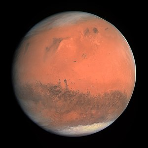

Марс
Материал из Википедии — свободной энциклопедии
У этого термина существуют и другие значения, см. Марс (значения). Для
термина «Пироент» см. также другие значения.
Марс
Марс — четвёртая по удалённости от Солнца и седьмая по размеру планета
Солнечной системы; масса планеты составляет 10,7 % массы Земли.Перейти к
разделу «
#Основные сведения» Названа в честь Марса —
древнеримского бога
войны, соответствующего древнегреческому Аресу.Перейти к разделу «#В
античной мифологии» Также Марс называют «красной планетой» из-за
красноватого оттенка поверхности, придаваемого ей минералом маггемитом —
γ-оксидом железа(III).
Марс — планета земной группы с разреженной атмосферой (давление на
поверхности в 160 раз меньше земного).Перейти к разделу «#Атмосфера и
климат» Особенностями поверхностного рельефа Марса можно считать ударные
кратеры наподобие лунных, а также вулканы, долины, пустыни и полярные
ледниковые шапки наподобие земных.
У Марса есть два естественных спутника — Фобос и Деймос (в переводе с
древнегреческого — «страх» и «ужас», имена двух сыновей Ареса,
сопровождавших его в бою), которые относительно малы (Фобос —
26,8×22,4×18,4 км, Деймос — 15×12,2×10,4 км)[9][10] и имеют неправильную
форму.
Начиная с 1962 года непосредственным исследованием Марса с помощью АМС
занимались в СССР (программы «Марс», «Фобос») и США (программы
«Маринер», «Викинг», «Mars Global Surveyor» и другие), а также
Европейское космическое агентство (программа «Марс-экспресс»), Индия
(программа «Мангальян») и Китай (Тяньвэнь-1, Чжужун). На сегодняшний
день Марс — наиболее подробно изученная планета Солнечной системы после
Земли.
Содержание
- Основные сведения
- Орбитальные характеристики
-
Физические характеристики
- 3.1 Параметры планеты
- 3.2 Сила тяжести
- 3.3 Марсианские сутки
- 3.4 Времена года на Марсе
-
Атмосфера и климат
- 4.1 Атмосферное давление
- 4.2 Климат
- 4.3 Пылевые бури и пыльные вихри
-
Поверхность
- 5.1 Лёд и полярные шапки
- 5.2 Гидросфера Марса
- 5.3 Грунт
Основные сведения

Марс — четвёртая по удалённости от Солнца (после Меркурия, Венеры и
Земли) и седьмая по размеру (превосходит по массе и диаметру только
Меркурий) планета Солнечной системы[11]. Масса Марса составляет 0,107
массы Земли, объём — 0,151 объёма Земли, а средний линейный диаметр —
0,53 диаметра Земли[10].
Рельеф Марса обладает многими уникальными чертами. Марсианский потухший
вулкан гора Олимп — самая высокая известная гора на планетах Солнечной
системы[12] (самая высокая известная гора в Солнечной системе — на
астероиде Веста[13]), а долины Маринер — самый крупный известный каньон
на планетах (самый большой каньон в Солнечной системе обнаружен на
спутнике Плутона — Хароне[14]). Помимо этого, южное и северное полушария
планеты радикально отличаются по рельефу; существует гипотеза, что
Великая Северная равнина, занимающая 40 % поверхности планеты, является
импактным кратером; в этом случае она оказывается самым крупным
известным ударным кратером в Солнечной системе.
Марс имеет период вращения и смену времён года, аналогичные земным, но
его климат значительно холоднее и суше земного.
Вплоть до полёта к Марсу автоматической межпланетной станции «Маринер-4»
в 1965 году многие исследователи полагали, что на его поверхности есть
вода в жидком состоянии. Это мнение было основано на наблюдениях за
периодическими изменениями в светлых и тёмных участках, особенно в
полярных широтах, которые были похожи на континенты и моря. Тёмные
длинные линии на поверхности Марса интерпретировались некоторыми
наблюдателями как ирригационные каналы для жидкой воды. Позднее было
доказано, что большинство этих тёмных линий является оптической
иллюзией[18].